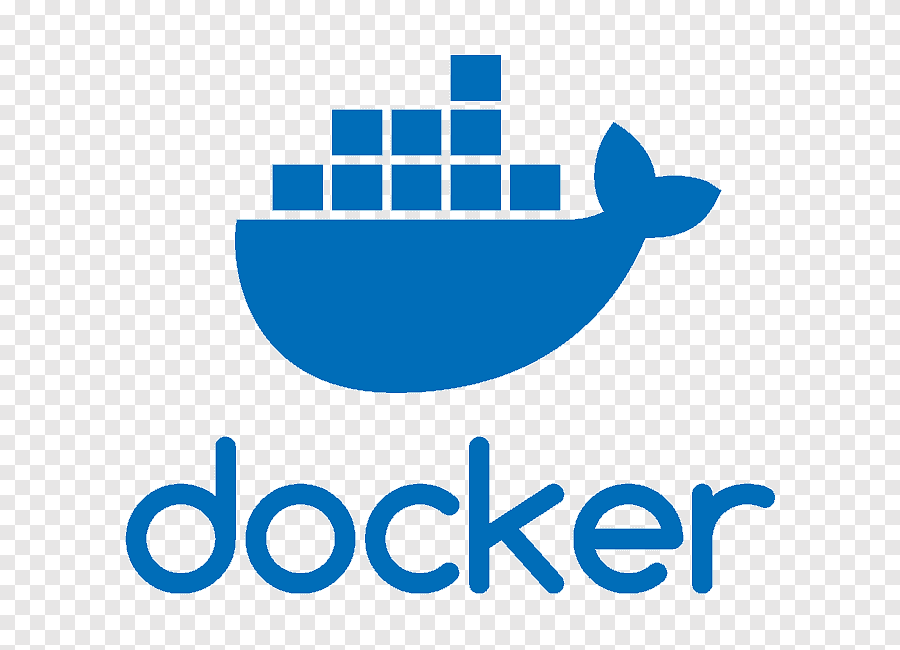
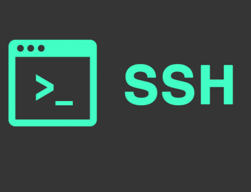

Sobre mí
Hola, soy Fidel Jesús Azurza López, un estudiante apasionado por la administración de servidores, la implementación de servicios en Linux y el uso de tecnologías como Docker y SSH. Mi objetivo es convertirme en un profesional capaz de diseñar, gestionar y optimizar infraestructuras tecnológicas modernas.
Me considero una persona curiosa, perseverante y con gran interés en aprender nuevas herramientas que impulsen la innovación. En este portafolio encontrarás mis proyectos, prácticas y experiencias que reflejan mi compromiso con el mundo de la tecnología.
Mis principales habilidades
 Administración de servidores Linux
Administración de servidores Linux-  Gestión de contenedores con Docker
-  Configuración de servicios SSH
- Redes y seguridad informática
 Resolución de problemas técnicos
Resolución de problemas técnicos